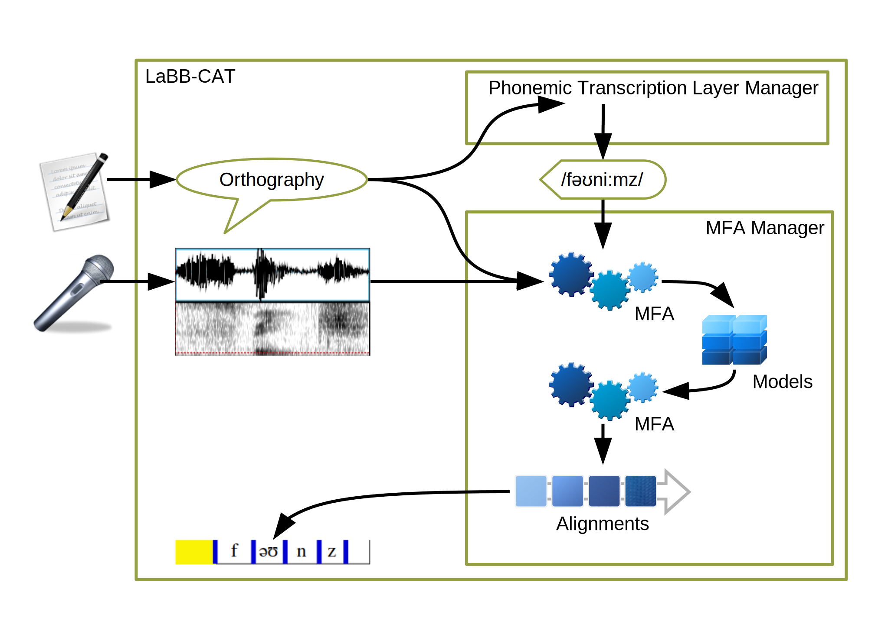

MFA: Train-and-Align
You can use ‘MFA’ to train new speaker-specific acoustic models on your speech data, and then to force align the data on those models. You may decide to do this if:
- You can’t share your data with third parties and so can’t use WebMAUS.
- MFA has no dictionaries and pre-trained acoustic models for the language of your data and so you can’t use MFA and Pretrained Acoustic Models.
- You have 3-5 hours’ speech.
The general process is illustrated below:

Prerequisites
In order to be able to force-align transcripts to the word and/or segment level, you first need the following:
- Transcripts that are aligned at the utterance level (i.e. there’s a known time-point every 20 or so words), whch have been uploaded into LaBB-CAT
- A WAV file for each transcript, on the LaBB-CAT server
- A phonemic transcription word layer, that has at least one pronunciation for every word. If there are some lines/utterances that contain words with missing pronunciations, those lines will be ignored by the HTK Layer Manager.
Depending on your speech data, there are several ways to obtain phonemic transcriptions for words:
- Lexical tagging
- CELEX - for British English, German, Dutch, using one of the CELEX layer managers.
- CMU Pronouncing Dictionary - for US English, using th CMU Pronouncing Dictionary layer manager.
- Unisyn - for various English varieties, using the Unisyn layer manager.
- Define your own lexicon, and use the Flat File Dictionary layer manager to integrate it into LaBB-CAT.
- Inferring pronunciation from orthography
- Spanish, using the Spanish Phonological Transcriber layer manager
- Bas Web Service: G2P - for various languages.
- Define your own simple mapping rules from orthography to phonology, using the Character Mapper layer manager.
If the speech corpus includes data in more than one language, it is possible to ensure that the utterances are phonemically tagged in a way that’s sensitive to the language of the specific utterance, using the language layers and attributes, and auxiliary layer managers.
Whichever method you choose, you need a phonemes ‘word layer’ on which each word token is tagged with its pronunciation, before you can proceed with the forced-alignment steps below.
Procedure for MFA Forced Alignment
The broad steps for getting forced-alignments from MFA are:
- Install MFA on the same computer that LaBB-CAT is installed on
- Install the MFA Layer Manager, which integrates LaBB-CAT with MFA
- Create and configure a new MFA layer in LaBB-CAT
- Pick a speakers/participants in your database and identify their utterances
- Fill in the missing pronunciations for those utterances
- Run forced alignment
- Repeat steps 4-6 for all the participants in your database
MFA Installation
MFA is a 3rd-party tool that LaBB-CAT integrates with via a Layer Manager module. MFA is not included as part of LaBB-CAT, and so it must be installed on the server you have installed LaBB-CAT on before you can integrate LaBB-CAT with it.
If MFA has not been installed already, please follow the following steps, depending on the operatings system of your LaBB-CAT server. This is a one-time process.
Linux
To install the Montreal Forced Aligner on Linux systems for all users, so that your web server can access it if required:
- Download Miniconda:
wget https://repo.anaconda.com/miniconda/Miniconda3-py38\_4.10.3-Linux-x86\_64.sh - Start the installer:
sudo bash Miniconda3-py38_4.10.3-Linux-x86_64.sh - When asked the location to install Miniconda, use:
/opt/conda - When asked whether the installer should initialize Miniconda, this is unnecessary so you can respond
no - Change ownership of the conda files:
sudo chown -R $USERNAME:$USERNAME /opt/conda - Make conda accessible to all users (so you web server can access MFA):
chmod -R go-w /opt/conda
chmod -R go+rX /opt/conda
- Install the Montreal Forced Aligner.
sudo /opt/conda/bin/conda create -n aligner -c conda-forge montreal-forced-aligner
Windows
To install the Montreal Forced Aligner on Windows systems for all users, so that your web server can access it if required:
- Download the Miniconda installer:
https://repo.anaconda.com/miniconda/Miniconda3-latest-Windows-x86_64.exe - Start the installer by double-clicking it.
- When asked, select the “Install for all users” option. This will install conda somewhere like.
C:\ProgramData\Miniconda3 - When asked, tick the “add to PATH” option.
- Install the Montreal Forced Aligner by specifying a path to the environment.
conda create -c conda-forge -p C:\ProgramData\Miniconda3\envs\aligner montreal-forced-aligner
Install the MFA Layer Manager
Once MFA has been installed, you have to install the MFA Manager, which is the LaBB-CAT module that provides MFA with all the data it needs, and then saves to alignments MFA produces back to your database.
- Select the layer managers menu option.
- Follow the List of layer managers that are not yet installed link.
- Find MFA Manager in the list, and press its Install button and then press Install again.
- As long as MFA has been installed for all users, you should see a box that’s already filled in with the location that MFA was installed to.
- Click Configure to continue the layer manager installation.
- You will see a window open with some information about integrating with MFA, including the information you’ve already read above.
Dictionary and segment layer labels
The labels used for phonemes layer (or whichever layer tags each word token with its pronunciation) will use a specific encoding for the phonemes. Encodings include:
- CELEX DISC: Exactly one ASCII character per phoneme,
e.g. there’ll →D8r@l - Unicode IPA: One or more Unicode character per phoneme, possibly including diacritics, delimited by spaces:
e.g. there’ll →ð ɛə ɹ l̩ - ARPAbet: Phonemes are one or two uppercase ASCII characters, possibly suffixed with a digit indicating stress, delimited by spaces:
e.g. there’ll →DH EH1 R AX0 L
If it uses CELEX DISC encoding, the phonemes layer should have its Type set to Phonological on the word layers page. Otherwise its Type should be set to Text.
In order to ensure that the labels that the MFA Manager will create on the segment layer use the same encoding, the segment layer must have the same Type as the phonemes layer. In order to ensure that:
- Select the segment layers option on the menu.
- The segment layer is the first on the list (and may be the only layer there).
- Check the Type of the segment layer. If it’s not the same as the phonemes layer, change the Type so that it matches, and press the Save button that appears.
Create the MFA layer
Once you’ve installed MFA and the MFA Layer Manager, you need to create a new layer for triggering and controlling forced alignment. This layer will itself contain a timestamp for each line/utterance it has force-aligned (and so it’s a ‘phrase’ layer), but during that process, the word and phone alignments will also be set on other layers.
- Select the phrase layers option on the menu
- Fill in the form at the top of the page (which doubles as column headings) with the following details:
- Layer ID:
mfa - Type: Text
- Alignment: Intervals
- Manager: MFA Manager
- Generate: never (this is because we will manually select utterance for forced alignment, to ensure there is enough data to train acoustic models)
- Description: MFA alignment time
- Layer ID:
- When you configure the layer, set the following options:
- Pronunciation Layer: select the phonemes layer (or whichever word layer that tags each word with its pronunciation)
- Dictionary Name: [none]
- Pretrained Acoustic Models: [none] (this ensures that the train/align procedure is used)
- The rest of the options can be left as their default values.
- If you’re curious about what the configuration options do, hover your mouse over each option to see a `tool tip’ that describes what the option is for.
- Press Set Parameters
Batch Alignment
MFA is data-hungry when training acoustic models for forced alignment, and needs 3-5 hours’ speech to produce accurate alignments. This means that, each time you run forced alignment, you should forced align several hours of speech at once. Depending on your data, this might represent a single speaker’s utterances, several speakers, or all speakers in your corpus!
To start a forced-alignment process for a batch of selected participants, you need to first select the participants who will be aligned. Then you need to list all their utterances, and MFA will first training acoustic models from scratch from them, and then using those acoustic models, align those same utterances.
- In LaBB-CAT, select the participants link on the menu
- Filter the list to display the desired participants, and tick the checkbox next to each participant you want to include
- Press the All Utterances button above
- Press List to list all of their utterances.
A progress bar will appear while LaBB-CAT identifies all the selected participant’s utterances. Once this is done, the first twenty utterances will be listed (like search results, the first twenty are listed for convenience, but you can process all matching utterances) - Click the Mfa button below the list.
A progress bar will appear while MFA gathers up all the utterance data, trains acoustic models, force-aligns the utterances, and then saves the resulting alignments back to LaBB-CAT. This process may take some time.
Once the progress bar reaches 100% and the process is complete, the selected utterances will have word start/end times set, and aligned phones will have been added to the segment layer, using the same labels as appear in the phonemes layer